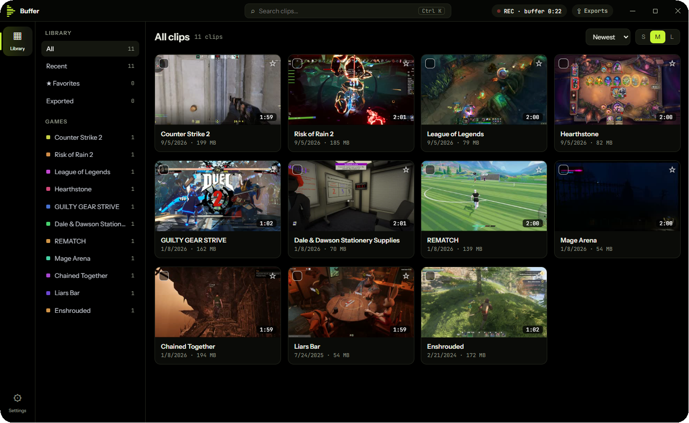
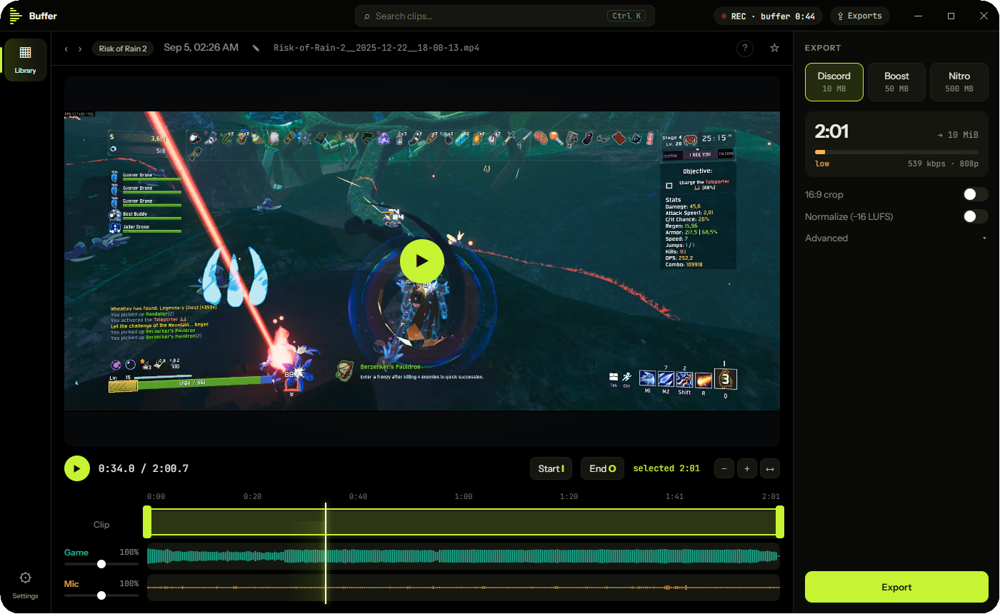

Always-on clip recorder and editor for Windows.
DownloadSmall on purpose. No launcher, no account, no overlay, nothing to babysit.


Keeps the last minutes in the background. One hotkey saves what just happened.
Game, voice chat and microphone are saved separately, so you can mute or fix any of them later.
Trim, crop to 16:9, then export for Discord (10 MB), Boost (50 MB) or Nitro (500 MB) and drag it in.
English, Polski, Deutsch, Español, Français, Українська, Türkçe, 日本語, 简体中文.